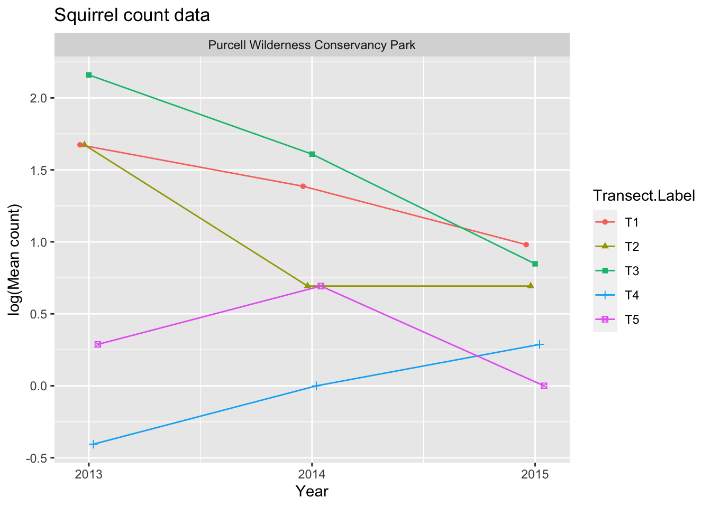
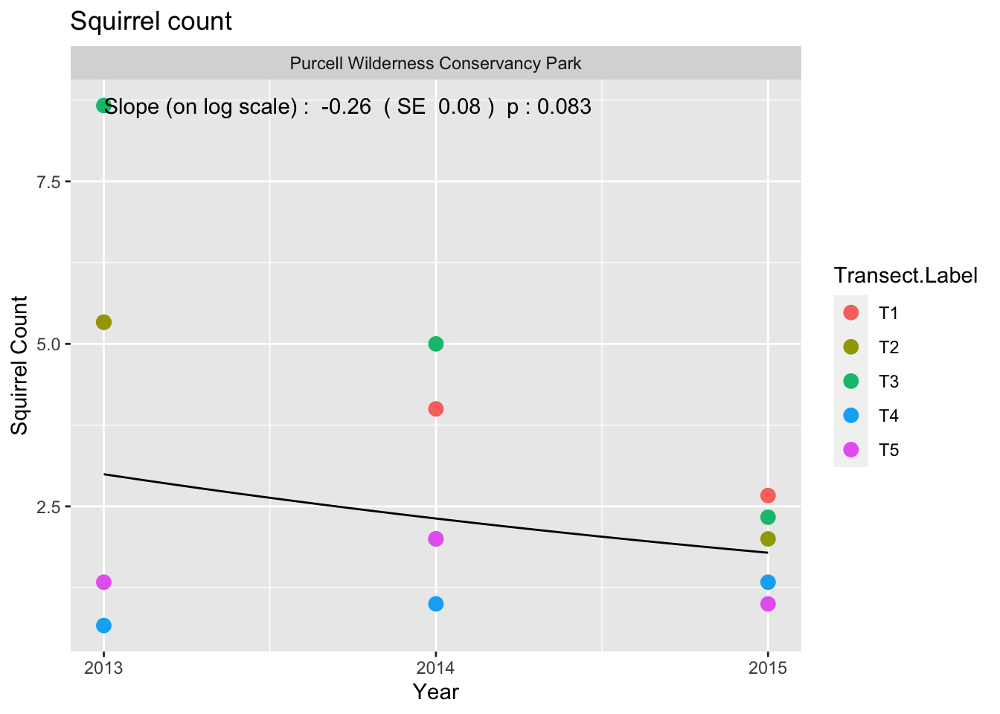
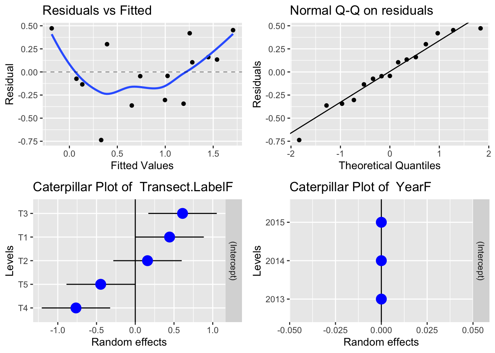

Red Squirels - LTEM - Purcell
1 Summary of Red Squirrel LTEM protocol
1.1 Basic protocol
As taken from the protocol document:
“Red squirrels regularly emit an audible rattle, especially when their territories are invaded. This protocol involves walking a transect (a section of a trail) and recording the location of rattles heard along the way.
For this protocol, locate as many transects in a given area as possible (up to 5). Sample them annually but in a different order each year. Sampling involves walking a defined segment of trail and recording squirrel rattles or chattering.
The data collected under this protocol consists of the.
- Detection Type. Was a call heard, a visual observation made or other evidence of a squirrel. Only calls will be used in this analysis
- Distance along the transect. The location of the observer along the transect when the detection was made.
- Distance from the transect. The perpendicular distance from the transect line to the observation along with the side of the transect.
1.2 Cautions about the protocol.
1.2.1 Don’t use 0 to indicate a missing value.
If no calls were heard on a transect, how is this indicated? For example, in the 2013 data table, there is NO observation for transect 4 on 2013-09-13. Does this mean that the transect was not run, or was it run and no squirrels were detected? The Transect Information sheet in the workbook has the GPS co-ordinates of each transect, but does not indicate if the transect was run on each of the days. It will be assume that ALL transects listed on the Transect Information worksheet are run on every date listed in the General Survey worksheet and if no information is present in the General Survey worksheet, then a 0 is imputed.
If would be preferable to create another worksheet indicating which transects were run on each sampling date.
1.2.2 No information on transect length available
. There is no information about the length of each transect or if each transect was visited on its entirety each visit. It will be assumed that each transect is approximately equal in length and that the entire transect is visited on a visit.
1.2.3 Not suitable for distance sampling to estimate density.
The current data looks very similar to captured by distance sampling methods where RANDOM transects are selected in the study area and the perpendicular distance of observations to the transect are selected. Distance sampling is used to estimate density.
In this protocol, transects are not selected at random. Indeed, according to the protocol,
“Find a location that is not difficult to access and where there are abundant squirrels.”
So the apparent density of squirrels may be biased upwards by the selection of transects
1.2.4 Be careful to document changes in transect over time.
The protocol is silent on how to document changes in transects over time. For example, suppose that a transect is damaged by fire? How is this recorded? Suppose that a transect is abandoned and new transect is chosen. At the very least, the transect label should NOT be recycled over time.
1.2.5 Not clear how to group visits.
The date that the transects are visited is also recorded. It is assumed that all transects will be visited on the same date. However, in some cases, the transects are visited over a span of 2 or 3 day – these should presumably be “pooled” into one visit. At the moment, there is no way to decide if all transects were visited on a single day, or if a “visit” corresponds to more than one day. A field should be added to the data base for the “visit”, e.g., if it takes several days to visit all transects, these should be either be recorded on the first date, or all take the same visit indicator.
1.3 Database structure
The database for this protocol is a series of Excel workbooks with multiple sheets in each workbook. The Transect Information sheet contains the information on the transects available for this year. It is implicitly assumed that every transect is visited on every date. The General Survey sheet contains the information collected. There are multiple lines per transect.
The relevant fields on the Transect Information worksheet are:
- Transect Label.
The relevant fields on the General Survey worksheet are:
- Transect Label.
- Date. The date the data was collected. The Year is extracted from this date.
- Detect Type. What type of detection was made. Only calls are of interest. A value of zeros will be imputed for the total number of calls heard on the transect if there is no information on a transect on a particular date.
2 Reading and checking the data
The database was read for all record pertaining to the Purcell. The following files were found:
File names with the data file.name
1 General Survey-squirrels_PWC_2013.xls
2 General Survey-squirrels_PWC_2014.xls
3 General Survey-squirrels_PWC_2015.xlsThese workbooks were read using R:
The following data editing was performed
2.1 Variables names corrected for R
Variable names in R must start with a letter and contain letters or numbers or underscores. Blanks in variable names are not normally allowed, nor are special characters such as %. These are normally replaced by periods (“.”) in the variable name.
Original variable names in squirrels data file [1] "file.name" "Study Area Name"
[3] "Transect Label" "Date"
[5] "Time" "End Time"
[7] "Surveyor" "Species"
[9] "Count" "UTM Zone"
[11] "Easting" "Northing"
[13] "Comments" "Detect Type"
[15] "Distance along transect" "Detect Distance (m)"
[17] "Air temp (c)" "BEC"
[19] "forest type" "Side of transect"
[21] "Year"
Corrected variable names of data frame [1] "file.name" "Study.Area.Name"
[3] "Transect.Label" "Date"
[5] "Time" "End.Time"
[7] "Surveyor" "Species"
[9] "Count" "UTM.Zone"
[11] "Easting" "Northing"
[13] "Comments" "Detect.Type"
[15] "Distance.along.transect" "Detect.Distance..m."
[17] "Air.temp..c." "BEC"
[19] "forest.type" "Side.of.transect"
[21] "Year"
Original variable names in transects data frame [1] "file.name" "Study Area Name" "Transect Label" "UTM Zone Start"
[5] "Easting Start" "Northing Start" "UTM Zone End" "Easting End"
[9] "Northing End" "Year"
Corrected variable names of transect data frame [1] "file.name" "Study.Area.Name" "Transect.Label" "UTM.Zone.Start"
[5] "Easting.Start" "Northing.Start" "UTM.Zone.End" "Easting.End"
[9] "Northing.End" "Year" 2.2 Dates converted to standardized form
Date
2013-09-13 2013-09-14 2013-09-15 2014-09-03 2015-09-03 2015-09-04 2015-09-05
29 20 19 15 14 12 3 Year
2013 2014 2015
68 15 29 Year
2013 2014 2015
5 5 5
The number of records by year are Year
Study.Area.Name 2013 2014 2015
Purcell Wilderness Conservancy Park 68 15 292.3 Checking Study Area Name
The Study Area Name should be recorded consistently across years, otherwise it may indicate that different sites are being studies. The study area name is converted to Title Case.
The list of Study Area Names by year in the data is:
Year
Study.Area.Name 2013 2014 2015
Purcell Wilderness Conservancy Park 68 15 29 Year
Study.Area.Name 2013 2014 2015
Purcell Wilderness Conservancy Park 5 5 52.4 Checking species code
The species code should be the same across the file.
Year
Species 2013 2014 2015
M-TAHU 68 15 292.5 Call type
We will only use the detecton type is CA (calls).
Year
Detect.Type 2013 2014 2015
CA 64 14 28
VI 4 1 1 Year
Detect.Type 2013 2014 2015
CA 64 14 282.6 Summarized data to the Year.Date.Transect level
We need to first summarize the data to the Year.Date.Transect level and impute 0’s for transects that were run, but no calls were recorded.
Year
n.calls 2013 2014 2015
1 2 1 2
2 4 2 3
3 0 0 3
4 0 1 1
5 2 1 0
7 2 0 1
9 1 0 0
10 1 0 0
11 1 0 0 Year Transect.Label Date Study.Area.Name
1 2013 T1 2013-09-13 Purcell Wilderness Conservancy Park
2 2013 T2 2013-09-13 Purcell Wilderness Conservancy Park
3 2013 T3 2013-09-13 Purcell Wilderness Conservancy Park
4 2013 T4 2013-09-13 Purcell Wilderness Conservancy Park
5 2013 T5 2013-09-13 Purcell Wilderness Conservancy Park
6 2013 T1 2013-09-14 Purcell Wilderness Conservancy Park[1] 28 5[1] 35 5Missing transect data on the following date --- check your data Study.Area.Name Year Date Transect.Label n.calls
4 Purcell Wilderness Conservancy Park 2013 2013-09-13 T4 NA
10 Purcell Wilderness Conservancy Park 2013 2013-09-14 T5 NA
29 Purcell Wilderness Conservancy Park 2015 2015-09-04 T4 NA
30 Purcell Wilderness Conservancy Park 2015 2015-09-04 T5 NA
31 Purcell Wilderness Conservancy Park 2015 2015-09-05 T1 NA
32 Purcell Wilderness Conservancy Park 2015 2015-09-05 T2 NA
35 Purcell Wilderness Conservancy Park 2015 2015-09-05 T5 NA[1] Study.Area.Name Year Date Transect.Label
[5] n.calls
<0 rows> (or 0-length row.names), , Study.Area.Name = Purcell Wilderness Conservancy Park
Date
Transect.Label 2013-09-13 2013-09-14 2013-09-15 2014-09-03 2015-09-03
T1 7 2 7 4 1
T2 9 5 2 2 3
T3 11 10 5 5 4
T4 0 1 1 1 2
T5 2 0 2 2 3
Date
Transect.Label 2015-09-04 2015-09-05
T1 7 0
T2 3 0
T3 2 1
T4 0 2
T5 0 0, , Study.Area.Name = Purcell Wilderness Conservancy Park
Date
Transect.Label 2013-09-13 2013-09-14 2013-09-15 2014-09-03 2015-09-03
T1 1 1 1 1 1
T2 1 1 1 1 1
T3 1 1 1 1 1
T4 1 1 1 1 1
T5 1 1 1 1 1
Date
Transect.Label 2015-09-04 2015-09-05
T1 1 1
T2 1 1
T3 1 1
T4 1 1
T5 1 1Following this, we summarize the data (with imputed 0’s) to mean number of calls per year per transect.
Study.Area.Name Year Transect.Label n.calls
1 Purcell Wilderness Conservancy Park 2013 T1 5.3333333
2 Purcell Wilderness Conservancy Park 2013 T2 5.3333333
3 Purcell Wilderness Conservancy Park 2013 T3 8.6666667
4 Purcell Wilderness Conservancy Park 2013 T4 0.6666667
5 Purcell Wilderness Conservancy Park 2013 T5 1.3333333
6 Purcell Wilderness Conservancy Park 2014 T1 4.0000000
7 Purcell Wilderness Conservancy Park 2014 T2 2.0000000
8 Purcell Wilderness Conservancy Park 2014 T3 5.0000000
9 Purcell Wilderness Conservancy Park 2014 T4 1.0000000
10 Purcell Wilderness Conservancy Park 2014 T5 2.0000000
11 Purcell Wilderness Conservancy Park 2015 T1 2.6666667
12 Purcell Wilderness Conservancy Park 2015 T2 2.0000000
13 Purcell Wilderness Conservancy Park 2015 T3 2.3333333
14 Purcell Wilderness Conservancy Park 2015 T4 1.3333333
15 Purcell Wilderness Conservancy Park 2015 T5 1.00000003 Single Site Analysis
Date for the Purcell are available from 2013 to 2015.
This design has multiple transects that are repeated measured over time with multiple plots measured on each transect that are also repeated measured over time. Please refer to the Fitting Trends with Complex Study Designs document in the CommonFile directory for information on fitting trends with complex study designs.
All analyses were done using the R (R Core Team, 2022) analysis system. All plots are also saved as separate *png files for inclusion into other reports.
3.1 Calls.
The data is first summarized to the transect-year level by finding the mean number of calls on a transect over multiple visitss for each individual transect. This reduces the data to one measurement per transect per site/year. It is implicitly assumed that all transects are run on all days within a so every transect has the same number of days of measurement. If transects are changed over time, that is not a problem, but transects should not be introduced or removed part way through a year.
A summary plot of the mean number of calls on each transect is shown in Figure 1.

There is evidence of a transect effect, where, for example, the number of calls at certain transects is generally higher than at the other transects because of local transect-specific conditions (e.g. better habitat).
Because this is count data, a linear mixed model is fit to the logarithm of the mean calls per transect. The model is:
\[log(AvgCalls) \sim Year + TransectF(R) + YearF(R)\]
where
- \(log(AvgCalls)\) is logarithm of the average number of calls for that transect in that year;
- \(TransectF(R)\) represents the (random)transect effect;
- \(YearF(R)\) represents the (random) year-specific effects (process error), and
- \(Year\) represents the calendar year trend over time.
The \(TransectF\) term allows for the fact that transect-specific conditions may tend to affect the counts on this transect consistently over time. The \(YearF\) term represent the year-specific effects (process error) caused by environmental factors (e.g., a warmer than normal year may elict more calls from squirrels).
Model fit on the logarithmic scale assume that effects are multiplicative over time, so that the when the actual fit is done on the logarithmic scale, the trends are linear. For example, a trend may assume that there is constant 5% change over time rather than a fixed 1-unit change per year. Some caution is needed if any of the values are 0 as log(0) is not defined. In these cases, a small constant (typically ½ of the smallest positive value in the dataset) is added to all values before the analysis proceeds.
The model was fit using the lmer() function in R.
boundary (singular) fit: see help('isSingular')Figure 2 shows a summary plot, along with estimates of the slope, its standard error, and the p-value of the hypothesis of no trend. With 3 years of data, the estimated slope on the logarithmic scale is -0.258 (SE 0.132) calls/year (p = 0.083).
This corresponds to an approximate exp(-0.258)=0.77x multiplicative change/year, i.e. the mean count in year \(t=1\) is about 0.77x the mean count in year \(t\). Because the analysis is done on the logarithmic scale, the fitted trend line looks non-linear on the original (non-transformed) scale.

Need to make dynamic The reason why the p-value is so large given that the standard errors are small relative to the estimated slope is because there are only 3 years of data and after fitting the line there is only 1 degree of freedom available to estimate the multiplier for the confidence intervals. With 1 degree of freedom, the multiplier is much larger than the usual value of 2 used to convert standard errors to confidence intevals.

Residual plots are presented in Figure 3. With only 3 years of data, the plots are not very informative. In the upper left corner is a plot of residuals vs. the fitted values. A good plot will show a random scatter around 0. Any large deviations from 0 should be investigated as potential outliers. In the upper right is a normal probability plot. Points should be close to the dashed reference line. Fortunately, the analysis is fairly robust against non-normality so only extreme departures are worrisome. Caterpiller plots attempt to show the distribution of the random effects. The bottom left plot shows the distribution of the transect effects. The bottom right plot shows the distribution of the year-specific effects (process variation). In this case, the estimated process variation is very small with most of points very close to 0.
It will also be possible to covariates such as mean winter temperature or degree days in the year to try and explain some of the variation over time using a multiple regression. If there is only a small number of years of data available, this may not sensible.
Whenever an analysis of a trend over time is conducted, the analysis should test and adjust for autocorrelation. Autocorrelation usually isn’t a problem (and likely cannot be detected) unless you have 10+ years of data. The test for autocorrelation commonly used is the Durbin-Watson test and we find p = 0.472 for the test of no autocorrelation.
This model used the approximate analysis on the logarithm of the average counts per transect. It is possible to analyze the actual raw counts using a generalized linear mixed model – this was not done in this example because of the extreme smallness of the dataset. Once many more years are collected, this may be an alternative analysis that will more naturally deal with 0 counts without having to add a small constant.